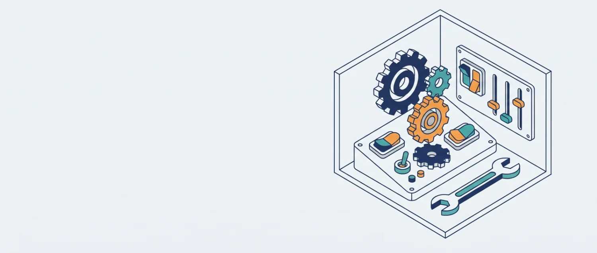

Ayarlar
Okul ve öğretmen bilgileri, etiketler, etkinlik ve toplantı türleri, sınıf öğretmenleri ve güvenlik.

Okul ve Rehber Öğretmen Bilgileri
Bu bilgiler görüşme formlarında otomatik olarak yer alır — imza yerine adınız, "Okulu" alanına okul adınız yazılır.
Okul Logosu
Logo; görüşme formlarının başlığında, dönem sonu faaliyet raporunun kapağında, rapor çıktılarında ve sol menünün üstünde görünür. Bu bilgisayarda veri klasöründe saklanır, internete gönderilmez; program güncellemelerinde silinmez.
PNG, JPG veya WEBP. En iyi sonuç için kare ve arka planı şeffaf (PNG) bir görsel kullanın.
Görüşme Formlarını Toplu Yazdır
Seçtiğiniz tarihler arasındaki bütün görüşmelerin resmi formları tek seferde hazırlanır; her form ayrı bir A4 sayfasına basılır. Yazdır penceresinde yazıcı yerine "PDF olarak kaydet" seçerek tek bir PDF dosyası da alabilirsiniz.
Veri Yedekleme
Program açık olduğu her gün bütün verileriniz (öğrenciler, görüşmeler, etkinlikler, toplantılar, ayarlar, logo) otomatik olarak yedeklenir. Aşağıdaki listeden istediğiniz tarihe geri dönebilirsiniz. Geri dönmeden önce o anki durumunuz da ayrıca yedeklenir; yani geri dönüş de geri alınabilir.
Yedekler
| Tarih | Tür | Öğrenci | Görüşme | Boyut | |
|---|---|---|---|---|---|
| Yükleniyor… | |||||
Görünüm
Programın renklerini seçin. Seçiminiz hemen uygulanır ve bu bilgisayarda hatırlanır. Yazdırılan formlar ve raporlar her zaman beyaz kâğıt görünümünde çıkar.
Etkinlik Bildirimleri
Saati girilmiş sınıf etkinliği, toplantı ve öğrenci hatırlatmalarının vakti gelince, program açıkken ekranın sağ üst köşesinde zil çalan bir bildirim kartı çıkar. Karttan "Tamamlandı" diyebilir, 5 dakika erteleyebilir ya da kapatabilirsiniz.
Öğrenci Etiketleri
Öğrenci dosyalarına eklenebilecek özel etiketleri buradan tanımlayın. Öğrenciler ekranındaki filtrede bu etiketler görünür.
Sınıf Etkinliği Türleri
Sınıf Etkinliği sayfasından bir sınıfa planlanabilecek etkinlik türlerini (örn. "Rehberlik Tanıtım Dersi") buradan tanımlayın. Yeni bir tür Sınıf Etkinliği sayfasındaki formdan da eklenebilir.
Toplantı Türleri
Toplantılar sayfasından planlanabilecek toplantı türlerini (örn. "Zümre Toplantısı", "RAM Toplantısı") buradan tanımlayın. Yeni bir tür Toplantılar sayfasındaki formdan da eklenebilir.
Sınıf / Şube Öğretmenleri
Öğrenci listesi yüklendiğinde sınıf öğretmeni bilgisi otomatik alınır; burada gerektiğinde düzeltebilirsiniz.
| Sınıf | Sınıf Öğretmeni | Öğrenci Sayısı | |
|---|---|---|---|
| Yükleniyor… | |||
Lisans / Etkinleştirme
Bu bir giriş şifresi değildir. Program klasörü başka bir bilgisayara kopyalanırsa, o bilgisayarda program hiç çalışmaz ve doğru şifre girilene kadar hiçbir sayfa görüntülenmez. Bu bilgisayarda program şifreye ihtiyaç duymadan çalışmaya devam eder. Bu koruma, 6698 sayılı Kişisel Verilerin Korunması Kanunu (KVKK) kapsamında öğrenci ve veli kişisel verilerinin yetkisiz kişilerce erişilmesini/kopyalanmasını önlemek amacıyla uygulanmaktadır.
Bu Bilgisayarın Durumu: Yükleniyor…
Hakkında
- Program
- Yükleniyor…
Kullanım Koşulları
Yükleniyor…
Üçüncü Taraf Bileşenler
- pypdf — PDF okuma kütüphanesi (BSD lisansı). Lisans metni:
uygulama/kutuphane/pypdf-LISANS.txt - Python 3.12 çalışma ortamı — yalnız Windows paketinde (Python Software Foundation lisansı). Lisans metni:
python/LICENSE.txt - Nunito / Nunito Sans yazı tipleri (SIL Open Font License 1.1). Lisans metinleri:
uygulama/web/assets/font/